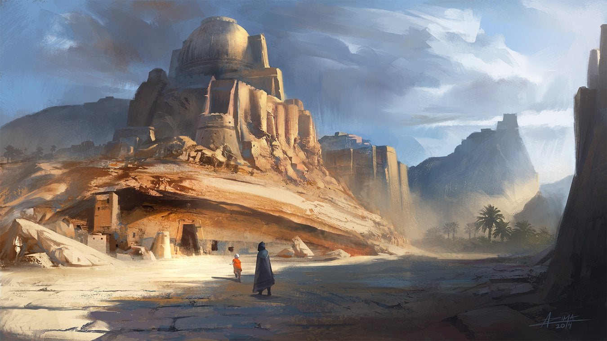

Sandstone

We are the Dwarves of the South. Of the Red Desert. Our ancestors were proud and strong, building their kingdom at the foothills of the mountains, while our brothers in the north hide tucked away within it. Our fortress is carved from the lower mountain hills into glorious monuments for all to see, and our mine runs deeper into the earth than any other dwarven kingdom.
King Gardain Fireforge son of Morgran is our Dwarven King of the Red Desert. He and his wife, Yilda, and their son Sorgrin work tirelessly to keep our fortress safe and thriving. Under his leadership, we have brokered a deal with the Spider Queen and the Demon Warlocks of Abydos to ensure peace and prosperity for all.
However, our generous and agreable king understands that demons and spiders cannot be trusted, so we have perfected the art of war alongside the art of diplomacy.